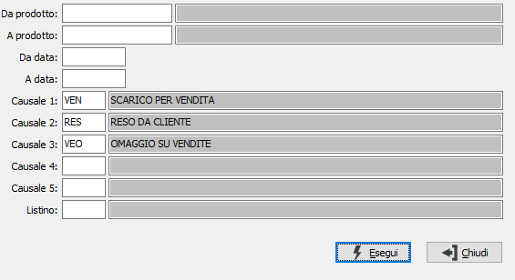

Stampa ricarichi per listino
Il programma produce un prospetto di controllo tra le vendite ed i listini.

DA PRODOTTO: eventuale codice dell'articolo, presente in anagrafica Prodotti, da cui si desidera iniziare la selezione. Confermando a vuoto, la selezione inizia con il primo prodotto valido. Sul campo è attiva la ricerca (F9) sull’anagrafica prodotti.
A PRODOTTO: eventuale codice dell'articolo, presente in anagrafica Prodotti, a cui si desidera terminare la selezione. Confermando a vuoto, la selezione termina con l’ultimo valido. Sul campo è attiva la ricerca (F9) sull’anagrafica prodotti.
DA DATA: eventuale data da cui deve iniziare l’analisi dei movimenti di magazzino per gli articoli precedentemente selezionati. Confermando a vuoto, l’analisi inizia con il primo movimento valido.
A DATA: eventuale data con cui si desidera terminare l’analisi dei movimenti di magazzino per gli articoli precedentemente selezionati. Confermando a vuoto, l’analisi si conclude con l'ultimo movimento valido.
CAUSALI: codici di causali di magazzino, da utilizzare per la lettura dei movimenti di magazzino. Vengono proposte le causali inserite in configurazione. Sul campo è attiva la ricerca (F9) sulla tabella stessa.
LISTINO: codice del listino con cui si desidera effettuare il confronto. Sul campo è attiva la ricerca (F9) sulla tabella stessa.